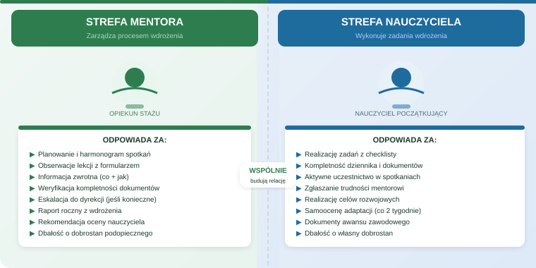
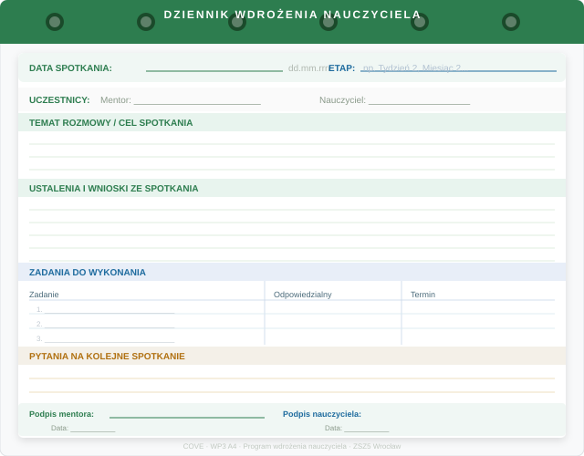
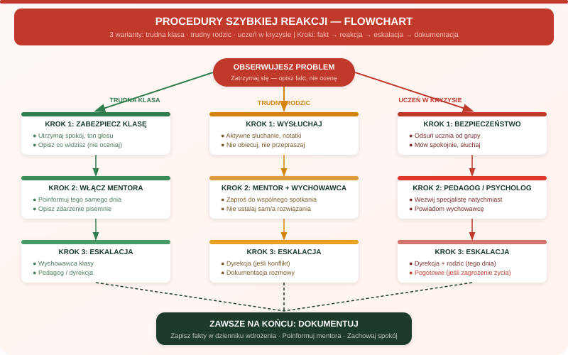
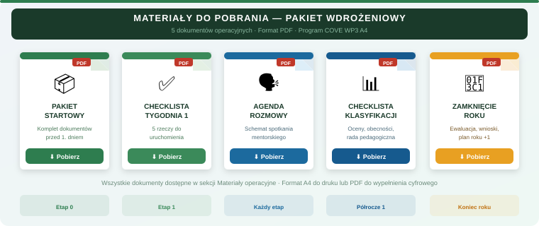

Odpowiedzialność za proces
- zaplanowanie kontaktu i cyklu rozmów,
- weryfikacja dostępu do systemów i dokumentów,
- monitorowanie ryzyk: dokumentacja, rodzice, klasa, obciążenie,
- uruchomienie właściwych osób wsparcia.
Proces wdrożenia nauczyciela
Strona porządkuje działania mentora i nauczyciela początkującego: etapy, zadania, rozmowy, dokumenty, procedury, ryzyka i materiały operacyjne na pierwszy rok pracy.
Rozdzielenie perspektyw
Przełącznik zmienia treści operacyjne, kolejność zadań i sposób formułowania działań. Mentor prowadzi proces, nauczyciel wykonuje zadania wdrożeniowe, a dyrekcja/koordynator pilnuje warunków organizacyjnych.

Centra pracy
Te podstrony rozwijają raport w konkretne narzędzia pracy: role, spotkania, obserwacje, karty do druku i multimedia.
Rola, granice, fazy relacji, OWP, ryzyka i rytm spotkań.
Zadania, refleksje miesięczne, przygotowanie do rozmów i plan rozwoju.
Kontrola programu, przypisanie mentora, ankiety i decyzje organizacyjne.
Pełne agendy, pytania i karty ustaleń dla całego roku.
Arkusz obserwacji, model OWP i rozmowa po lekcji.
Kontrakt, IPR, refleksja, ankieta, mapa kontaktów i klasyfikacja.
Aktualny etap
Wybierz etap. Panel pokaże zadanie mentora, pytanie kontrolne i ryzyko do sprawdzenia.
Wybierz etap. Panel pokaże zadanie nauczyciela początkującego, pytanie do wyjaśnienia i ryzyko organizacyjne.
Sprawdź, czy nauczyciel ma godzinę i miejsce stawienia się, plan pierwszego dnia, kontakt do mentora, informację o klasach oraz instrukcję uzyskania dostępu do dziennika.
Otwórz podstronę etapuKtórych informacji nauczyciel nie ma jeszcze przed pierwszym dniem?
Brak danych organizacyjnych powoduje opóźnienie w dostępie do dziennika, sal, kluczy i planu zajęć.
Proces
Mapa pokazuje główne obszary wdrożenia: orientację, organizację szkoły, dokumenty, mentoring, sytuacje wymagające reakcji oraz higienę pracy.
Moduł 01
Mentor sprawdza, czy nauczyciel ma dane kontaktowe, plan pierwszego dnia, informacje o klasach, dostęp do dziennika oraz instrukcje dotyczące sal i kluczy.
Ścieżka krok po kroku
Zadania są podzielone na etapy pierwszego roku. Widok mentora i widok nauczyciela mają osobne checklisty.
Baza wiedzy
Pełna baza wiedzy jest osobną podstroną. Zawiera karty operacyjne o dokumentach, awansie, komunikacji, sytuacjach trudnych i podstawach prawnych.
Obecności, tematy, oceny i uwagi wpisuje się systematycznie. Wiadomości do rodziców są elementem dokumentacji, więc powinny być rzeczowe i jednoznaczne.
Na początku roku należy przygotować zasady oceniania oraz wymagania dla klas. Dokumenty muszą być zgodne z wewnątrzszkolnym systemem oceniania.
Kluczowe są terminy, plan rozwoju, dokumentowanie działań, obserwacje zajęć oraz końcowa ocena lub postępowanie wymagane na danym etapie.
Sprawy poważne należy konsultować z wychowawcą. Po rozmowie warto zapisać datę, temat, ustalenia i osoby obecne w swoim dzienniku pracy.
Sygnały przemocy, zaniedbania, autoagresji lub zagrożenia zdrowia wymagają przekazania sprawy pedagogowi, psychologowi, wychowawcy i dyrekcji.
Warto wyjaśnić składniki pensji: wynagrodzenie zasadnicze, wysługę lat, dodatek motywacyjny, funkcyjny, warunki pracy i godziny ponadwymiarowe.
Rozmowy mentorskie
Każda rozmowa ma cel, zakres kontroli i listę ustaleń. Scenariusze można stosować jako protokół spotkania mentorskiego.
Szybkie pytania
Narzędzia pracy
Narzędzia służą do kontroli procesu: oceny stanu adaptacji, zapisania ustaleń i wyboru procedury dla typowej sytuacji problemowej.


Po każdej rozmowie mentor lub nauczyciel prowadzi krótką notatkę w zeszycie, pliku szkolnym albo własnym dokumencie.

Zobaczysz krótką ścieżkę: co zrobić od razu, kogo włączyć i co zapisać.
Materiały merytoryczne
Poniższe materiały są treścią roboczą przewodnika. Zostały wyprowadzone z dokumentów Markdown i przepisane na format użyteczny w procesie wdrożenia.

Awans i ocena pracy zależą od aktualnego stanu prawnego oraz statusu nauczyciela. Mentor nie interpretuje przepisów samodzielnie. Jego rola operacyjna polega na sprawdzeniu, czy nauczyciel wie, gdzie są aktualne wymagania, kto w szkole wyjaśnia procedurę, jakie obserwacje i rozmowy są ujęte w harmonogramie oraz jakie materiały warto gromadzić jako dowody pracy.
Nauczyciel powinien znać składniki wynagrodzenia: wynagrodzenie zasadnicze, dodatek za wysługę lat, dodatek motywacyjny, dodatek funkcyjny, dodatek za warunki pracy oraz godziny ponadwymiarowe. Mentor nie rozlicza wynagrodzenia, ale powinien wskazać, gdzie znajdują się regulaminy i z kim wyjaśniać pierwszą wypłatę.
Obowiązki: prowadzenie zajęć, bezpieczeństwo uczniów, dokumentacja, przestrzeganie statutu i regulaminów, tajemnica zawodowa oraz doskonalenie zawodowe. Prawa: ochrona prawna nauczyciela podczas wykonywania obowiązków, prawo do rozwoju, dostęp do świadczeń socjalnych i możliwość wnioskowania o ocenę pracy zgodnie z przepisami.
Czy trzeba znać wszystkie procedury w pierwszym dniu? Nie. Priorytetem są: plan dnia, sale, dziennik, klucze, kontakt do mentora i sekretariatu.
Co zrobić z pytaniami? Zapisywać i omawiać na spotkaniu mentorskich. Nie odkładać spraw proceduralnych bez terminu.
Gdy klasa nie reaguje? Zmień formę pracy, porozmawiaj z konkretnymi uczniami po lekcji, włącz wychowawcę przy powtarzalnym problemie.
Gdy rodzic eskaluje? Przerwij spór, zaproponuj rozmowę z wychowawcą, udokumentuj kontakt.
Co jest pilne we wrześniu? Dziennik, plan wynikowy/wymagania edukacyjne, PSO, terminy klasyfikacji i zasady kontaktu z rodzicami.
Co dokumentować? Oceny, obecności, tematy, ważne rozmowy z rodzicami, dostosowania dla uczniów oraz ustalenia formalne.